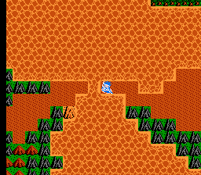
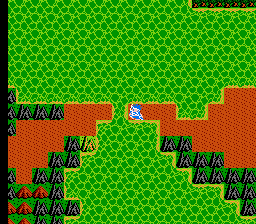
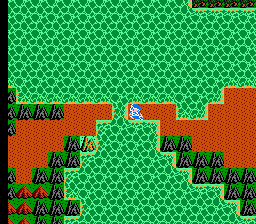
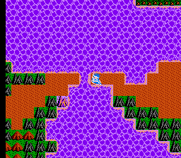
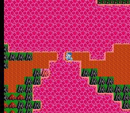
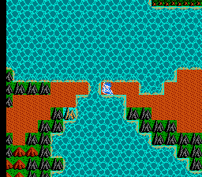
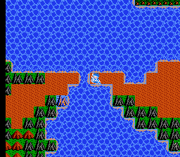

AGE: Around 16 | BLOOD TYPE: unknown | ZODIAC: Capricorn | MOON: Scorpio Rising

Welcome to My Homepage | July 2020 | NILSON THOMAS CARROLL
AGE: Around 16 |
BLOOD TYPE: unknown |
ZODIAC: Capricorn |
MOON: Scorpio Rising
My name is Nilson (16). I am from Rochester, NY. I will be exploring queer glitches made within the Dragon Quest games this month. I hope to stream some live glitches on twitch, I will let you know. I will be using these glitches to construct a new Dragon Quest narrative here as the month goes on.
~ nilson, july 1, 2020 ~
some text I sent cody today:
There's a part at the very end of Dragon Warrior 3 where you use this item the -Rainbow Drop-
at this cliff and the -Rainbow Bridge appears- and I spent a very long time with this one
glitched
save state, sort of getting lucky and being able to force it through the game, and
somehow I
ended up with the rainbow drop in my possession at the right place and so i used it
and when
I crossed the rainbow bridge i got this text that said "You are no longer invisible."
and i think that
I might just start weeping now it was perfect, I didnt even get a screenshot it was so
fast but it
made me realize something, that a lot of what I fight against with the game is this
notion that
you are the son of the legendary hero, your father's god dna is stuck in your veins -
but the final
sequence of the game has you going back to where the first game takes place, where
the original
hero had to find the rainbow drop himself and make his own bridge, and i guess that
legacy reminds
me now of the queer lineage and legacy that i am following in, my father's dna be damned.
~ nilson, july 14, 2020 ~

The look of the Dragon Quest glitches on smartphones might be my favorite.
The pixel density looks best and is very clear. When making the .gifs of
the glitches, I look for the blink of a cursor or the motion of either the
hero or an npc, either of which indicates something within the game state is
still alive. The glitch process is a negotiation of risk, pushing the game
state. The text for this project gets a little scrambled on smaller resolutions
though. For this work, the clean NES graphics work best, but I'm still inclined
to like the blurred monitor quality of true hardware NES graphics. Actually, my
favorite NES graphic quality is photos off a monitor printed, for like a magazine.
It'd be interesting to play an actual game with this quality.
~ nilson, july 20, 2020 ~
I'd like to show these glitches in a physical space or real world context, which I know is currently not an option. I think about the time a few months ago I showed some DQ glitches on an open projector night via twitch for babycastles - it was actually my first time using twitch, lol, and my camera fell over because I was doing the whole thing in my bed... I was quite embarrassed, though it was probably okay. I've learned more about the glitch process since then, how to manage the files better and document the glitches easier. I've streamed a few hours of live corruptions here and there, but not much. I love the html package format, and I obviously hold the PDF in high regard, but I think digital work like this still feels best in a weird room in a weird, dark building. I hope everyone stays safe < < <
~ nilson, july 29, 2020 ~